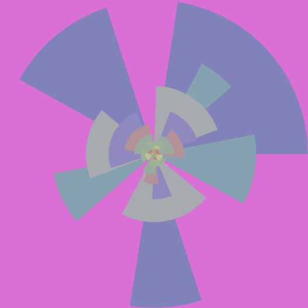
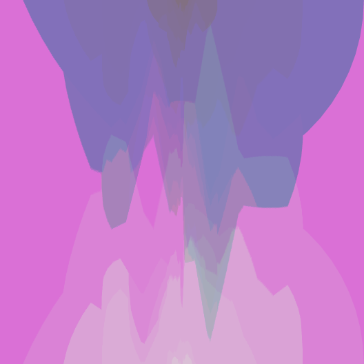
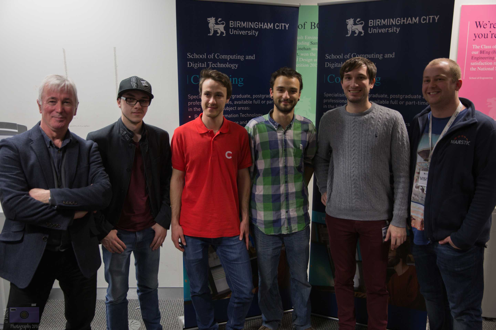
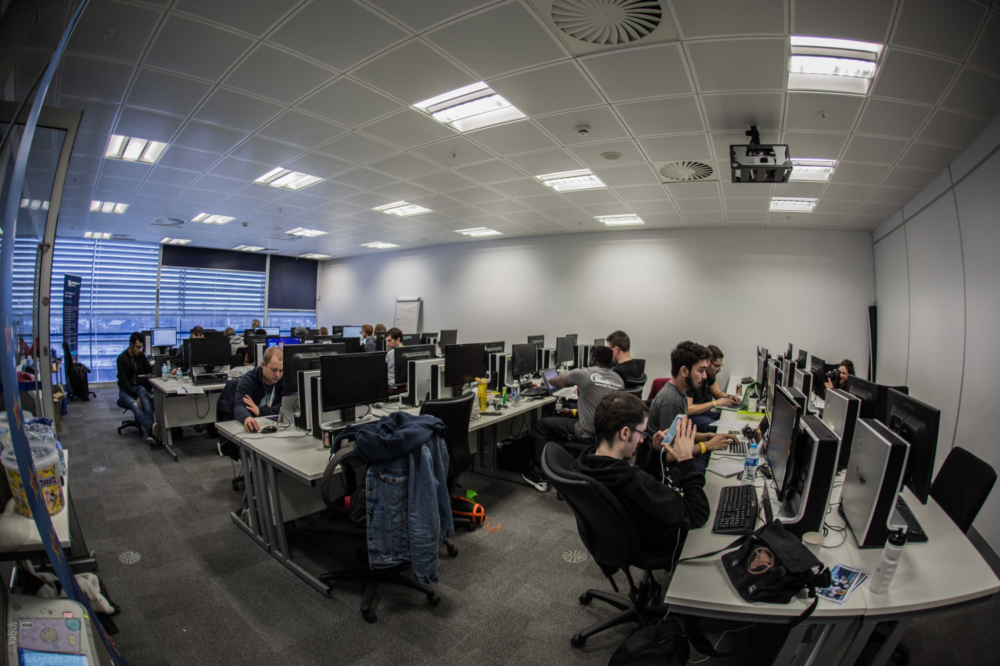

MoneyMatters was an app I built together with Daniel Dainty and Mohammed Nuur at HackNotts 2015.
The app gets data on charities through the Just-Giving API along with the user's account balance (using the Capital-One API).
It then stores the data in a json file, which is passed to the user's dashboard of the pebble app and displayed in an accessible and simple format on the
pebble wristwatch. We prototyped the data retrieval system using python and then converted the methods to php, so that we could host it and make requests with the pebble.
I was mainly in charge of making the pebble app, which was built using javascript. Our web-page and dashboard were made using bootstrap. The app recieved the prize
for the best use of the Just-Giving API.
PyArt
PyArt is an art-generating program, which I wrote in python. The app uses python turtles and tkinter to create
personalized art for each user. The user has to enter an email address or twitter handle, which serves as a seed for the randomly generated art. The program produces 2 versions
of the art piece - the first one being the original, while the second image is the first with all colour bits sorted by value. These images are then
sent to the user via email or tweeted to them.

BCUHack
As part of my placement I organized BCUHack - Birmingham City University's first 24 hour hackathon. The event took place on the 29th February and saw 60 students from
a variety of courses come together and work overnight in order to create some amazing projects. We had both local and international sponsors for the event: Majestic, Clevercherry, Urban Hax CIC,
Codio, HackerEarth, Deliveroo and the Boston Tea Party.

BullHacks
In March of 2017 I helped organise BullHacks with members of the Hackathon and Computing Society (HaCS). It was Birmingham City University's first MLH Hackathon open to students from all universities. The event was sponsored by Capgemini,
Algolia, the British Computing Society, Github and dotTech domains. The event had over 70 attendees and was a great success. My role was focused around overseing the overall organisation, liasing with the Student Union
and various sponsors.
Diffuse Magazine AR App
I worked on an Agumented Reality application for Paige Bowman's Diffuse magazine. The concept behind the magazine was the diffused state of mind during which people are at their most creative.
The application fit the theme by revealing a second layer to the physical magazine. It works for several pages in the magazine. I used Vuforia's plugin to the image recognition. The app is currently available for Android here.